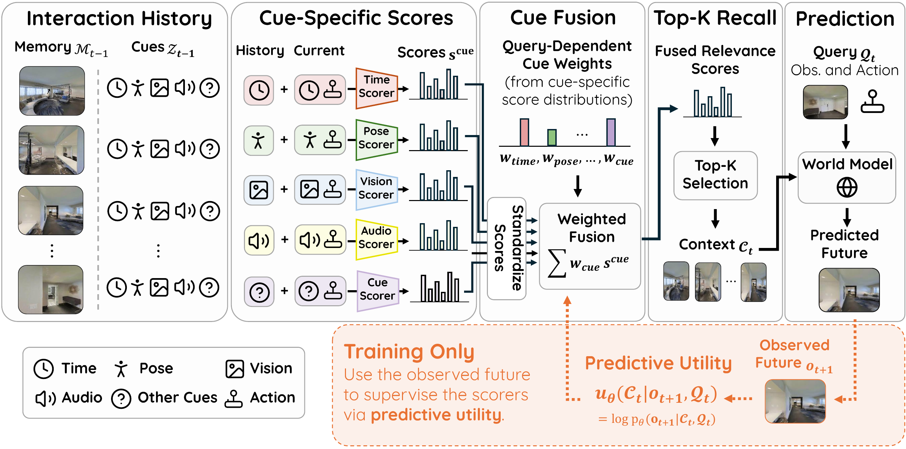

Learning which memories to recall, and which cues to trust, from the future the world model is trained to predict.
1Korea Advanced Institute of Science & Technology ·
2Sony Group Corporation ·
3Imperial College London
†Corresponding authors
Under review
World models predict future observations from current experience and actions, yet prediction can depend on observations seen far in the past. Episodic memory preserves past observations for later recall; however, as memory accumulates, it raises a fundamental question:
Which memories are useful for the current prediction, and which retrieval cues should be trusted to find them?
Fixed criteria based on recency, pose overlap, or visual similarity are unreliable across environments and queries. Future-Aware Recall (FAR) instead learns recall: during training, the realized future reveals which memories actually helped the prediction, and that signal trains a retriever that stays future-blind at inference and learns which cues to trust for each query.
Across three complementary settings, FAR outperforms hand-designed recall even with the same retrieval cues, automatically adapts which available cues to trust, and recalls the right history as the world changes. Together, these results establish FAR as a flexible, principled approach to episodic memory access in world models.
Method

A memory is worth recalling when conditioning on it makes the realized future more likely under the world model.
During training the observed future re-ranks the candidate memories, and the retriever learns to match that ranking without ever seeing the future at test time.
A learned gate weights time, pose, vision, audio, and any other cue per query, leaning on whichever is most trustworthy.
Experiments
Three complementary settings, each with a different source of long-horizon uncertainty: LoopNav, a static outdoor Minecraft environment with time, pose, and visual cues; SoundSpaces, realistic indoor scenes with spatialized audio; and AI2-THOR, interactive household scenes whose state changes with the agent's actions.
Every trajectory has an exploration phase, in which the agent observes and, where applicable, interacts with the environment, and a return phase, in which it revisits explored locations. The world model generates the return-phase video using the exploration-phase observations as its memory pool, and we measure frame-wise discrepancy against ground truth.
These are ground-truth episodes from the evaluation sets, not model rollouts. Each shows the exploration phase, which fills the episodic memory, followed by the return phase that the world model is asked to predict. Generated rollouts are shown further below, per dataset.
SoundSpaces
Realistic indoor navigation with spatialized audio. Each block shows the ground-truth frame, then for each method the prediction and the recalled memories with their time offsets. Red shading marks where a prediction differs from the ground truth. It is an error overlay drawn for visualization, not something the model generated. Where pose and appearance are ambiguous along a corridor, FAR learns to rely on audio and recalls a memory with a clear line of sight to the goal region.
DreamSim near loop closure ↓ perceptual distance to the ground truth over the final quarter of the return phase; lower is better
Full return-phase rollouts. Press play on a video to watch it; use the controls to scrub or go fullscreen.
AI2-THOR
Interactive household scenes where the agent moves objects between surfaces and containers during exploration, so memory holds the same place in conflicting world states. Each block shows the ground-truth frame, then for each method the prediction and the recalled memories with their time offsets; a badge on each prediction says whether the rendered state matches the world the agent left behind. FAR recalls the frames from the interaction itself rather than a pose-matched but stale view.
State-change prediction accuracy ↑ fraction of revisited scenes where the world model renders the changed state rather than the stale pre-interaction one; higher is better
FAR is 1.9× the best baseline on surface changes and 6× on container reveals, where the contents only become visible after opening.
Full return-phase rollouts. Press play on a video to watch it; use the controls to scrub or go fullscreen.
A controlled two-agent corridor: the observer sees a second, independently patrolling agent only intermittently through a doorway, and must later predict where that agent is when looking down the corridor. Each recalled context is a pair of observations about 1.5 seconds apart so it can carry motion.
Predicting the patrolling agent’s future location ↑ trajectory-level accuracy; higher is better
FAR learns both which episodic memories are useful for prediction and which retrieval cues to trust. It uses the observed future during training to assign predictive credit while remaining future-blind at inference, and its adaptive cue fusion lets it exploit time, pose, vision, audio, or any other signal attached to a memory. Across navigation, multimodal, and changing-state environments, this consistently improves long-horizon prediction and supports predictive utility as a principled basis for episodic memory access in persistent world models.
Our work focuses on the recall problem and assumes an external episodic memory. How memories are written, compressed, or forgotten, and how interactions among multiple memories are credited beyond our candidate-level approximation, remain open. FAR relies on informative retrieval cues and adds training-time computation for future-aware utility evaluation, though inference is unchanged. Our experiments are in controlled simulation; extending predictive episodic recall to richer real-world settings, together with learned memory formation and persistent-state representations, is a natural next step.
@article{kim2026learning,
title = {Learning What to Recall: Adaptive Multi-Cue Episodic Memory for World Models},
author = {Kim, Beomsu and Lai, Chieh-Hsin and Nguyen, Bac and Bar, Amir and Ye, Jong Chul and Mitsufuji, Yuki},
journal = {Under review},
year = {2026}
}